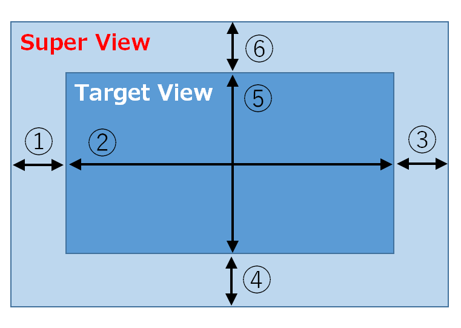
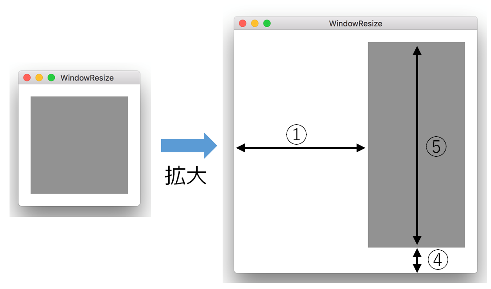

ビューの大きさをウィンドウの大きさに追随させる
ウィンドウをユーザ操作によって広げたり縮めたりしたとき、ウィンドウに含まれるビューの大きさをウィンドウの大きさ合わせて変える方法について説明する。
ビューがビューを含む場合、外側のビューをSuperView、内側のビューをTargetViewと呼ぶ。SuperViewの大きさを変えたとき、TargetViewの大きさがどのように変化するかは、TergetViewのautoresizingMaskプロパティのマスク値によって変わる。
Objective-C
Swift
例題
一般的には、ビューの大きさをウィンドウの大きさに追随させるのがほとんどの使用法であろう。
Objective-C
Swift
次の例はパラメータの働きを理解してもらうために例示する。（使用する局面はあまりななそう）
① 左側マージン可変、④ 下側マージン可変、⑤ 高さ可変
ウィンドウを拡大すると内側のビューは図の通りに変化する。
